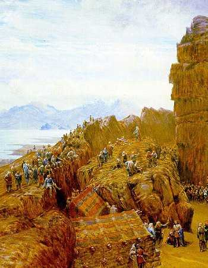

Legado Vikingo
El Legado Vikingo: Huellas de una Civilización Guerrera y Exploradora
Los vikingos, célebres por su fiereza y audacia como guerreros, dejaron una huella indeleble en la historia de Europa y más allá. Su legado, sin embargo, va mucho más allá del saqueo y las incursiones. Procedentes principalmente de las regiones escandinavas actuales —Noruega, Suecia y Dinamarca—, los vikingos fueron hábiles navegantes, comerciantes, colonizadores y, en muchos casos, pacíficos agricultores y artesanos. Su influencia se extendió desde las costas de América del Norte hasta los desiertos del Medio Oriente, dejando rastros en la cultura, la lengua, las leyes y las estructuras políticas de numerosos territorios.
Uno de los aspectos más impresionantes del legado vikingo es su capacidad marítima. Sus barcos, conocidos como drakkars, eran obras maestras de la ingeniería naval. Con diseños largos, livianos y simétricos, estos navíos podían navegar tanto en mar abierto como en ríos poco profundos. Esta versatilidad les permitió explorar y establecer rutas comerciales que conectaban el Báltico con Constantinopla (actual Estambul) y Bagdad.
Principales Legados Vikingos:
- Avances en navegación: El diseño de los barcos vikingos influyó en el desarrollo de la navegación europea, por su resistencia, velocidad y capacidad de maniobra.
- Red de rutas comerciales: Establecieron conexiones entre Escandinavia, Europa Occidental, el mundo árabe y Asia Central.
- Fundación de ciudades y asentamientos: Fundaron Dublín en Irlanda, colonizaron partes de Inglaterra, Escocia, Normandía, Islandia, Groenlandia y Canadá (L’Anse aux Meadows).
- Influencia lingüística: Muchas palabras del inglés moderno tienen raíces nórdicas (por ejemplo, sky, egg, knife, window).
- Sistema político de asambleas (Thing): Introdujeron asambleas populares donde los hombres libres decidían las leyes. Este sistema inspiró futuros modelos parlamentarios, como el Alþingi islandés.
- Formación de estados eslavos: Los vikingos suecos (varegos) fundaron rutas y ciudades como Nóvgorod y Kiev, base de la Rus de Kiev y del estado ruso medieval.
- Mitología nórdica: Las historias de dioses como Odín, Thor, Loki y Freyja sobrevivieron gracias a las Eddas islandesas, y hoy forman parte de la cultura popular global.
- Producción artística: Eran maestros de la talla en madera, el trabajo en metal y la orfebrería. Sus objetos combinaban belleza y funcionalidad, con diseños intrincados y simbólicos.
- Arquitectura resistente: Construyeron viviendas comunales, estructuras de piedra y barcos con técnicas adaptadas a climas extremos.
- Tolerancia y adaptación religiosa: Aunque eran paganos, muchos se convirtieron al cristianismo. En sus tumbas se hallan elementos de ambas creencias.
En el siglo IX, los vikingos fundaron importantes enclaves como Dublín y establecieron asentamientos duraderos en Inglaterra, Escocia y el norte de Francia. El duque de Normandía, descendiente de vikingos, conquistaría Inglaterra en 1066. Estos asentamientos introdujeron técnicas de construcción, métodos agrícolas y dejaron una huella indeleble en las lenguas e instituciones locales.
En el este de Europa, los vikingos se mezclaron con pueblos eslavos, formando la base del estado de Kiev, núcleo del desarrollo posterior de Rusia. Además, su sistema de leyes comunitarias —las asambleas thing— inspiró formas tempranas de democracia participativa, especialmente en Islandia, donde aún hoy funciona el Alþingi, el parlamento más antiguo en funcionamiento del mundo.
La cultura vikinga no se limitó al saqueo: desarrollaron una mitología rica en simbolismo, con relatos orales que describían la creación del mundo, las aventuras de los dioses y el apocalipsis final (Ragnarök). Gracias a las sagas islandesas, se han preservado estas historias, que hoy siguen inspirando creaciones en cine, literatura y videojuegos.En el arte, dejaron una herencia notable: broches, espadas decoradas, barcos funerarios, tallas de madera y objetos domésticos con un estilo único, que mezclaba formas geométricas, figuras animales y motivos mitológicos. En la arquitectura, sus casas comunales y estructuras de piedra son prueba de su capacidad de adaptación a entornos hostiles.
Su adopción del cristianismo marcó un cambio clave. Aunque al principio lucharon contra los cristianos, muchos reyes vikingos acabaron abrazando la fe. Esta transición fue acompañada de un sincretismo religioso, visible en las tumbas y en artefactos que combinan símbolos cristianos con mitología nórdica.
En la actualidad, el legado vikingo está muy presente en la cultura de Escandinavia, donde se celebran festivales, se enseñan lenguas antiguas y se conservan museos dedicados a su historia. También en el resto de Europa y América, los vikingos son objeto de estudio y fascinación.